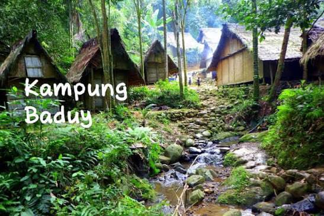
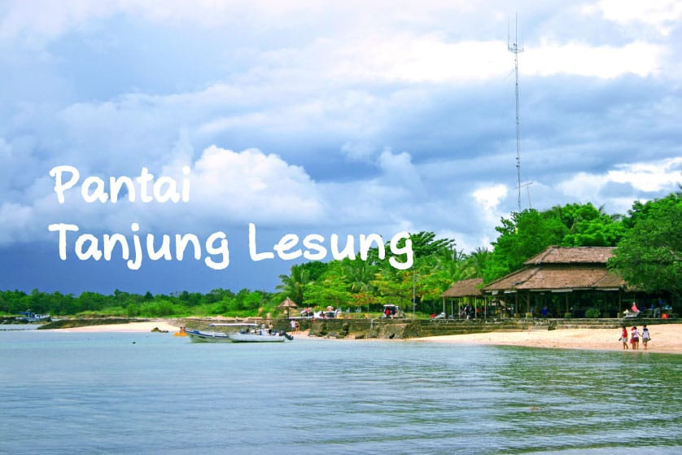
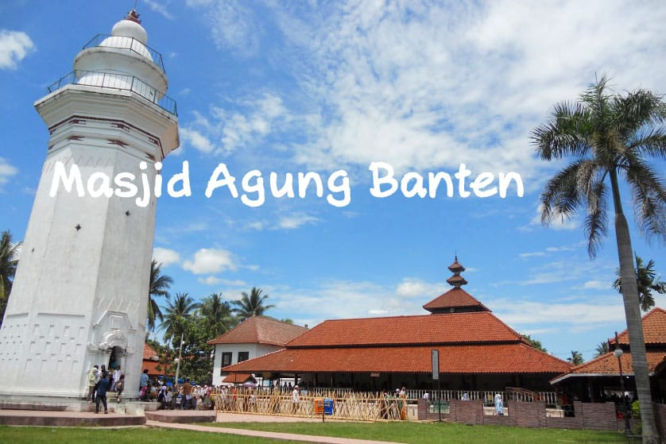
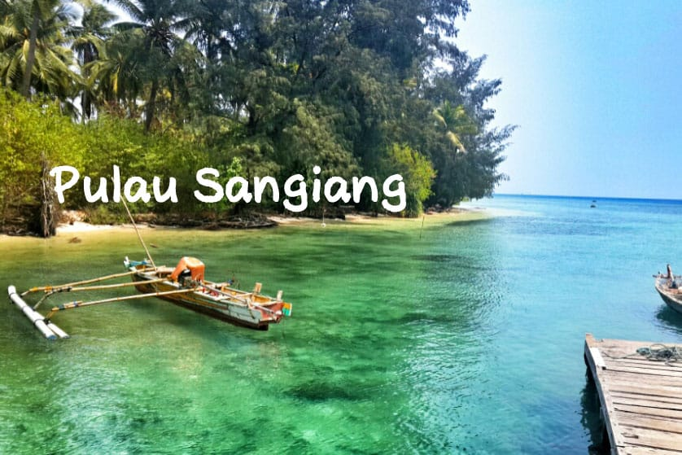

Kampung Tradisional
Suasana yang tenang, rumah khas, dan warga yang ramah buat pengalaman liburan yang natural.

Wisata Tanjung
Tempat ini cocok buat kamu yang mau lihat pantai, suasana tenang, dan tempat wisata yang mudah dikunjungi.
Lihat daftar wisataKenapa pilih Tanjung?
Tanjung punya banyak pilihan wisata yang sederhana tapi asyik, mulai dari pantai, kampung, sampai tempat yang cocok untuk santai bareng keluarga.

Suasana yang tenang, rumah khas, dan warga yang ramah buat pengalaman liburan yang natural.

Tempat yang cocok untuk melihat arsitektur dan tahu sedikit cerita budaya setempat.

Pemandangan laut yang enak dilihat, angin sejuk, dan suasana santai untuk beristirahat.